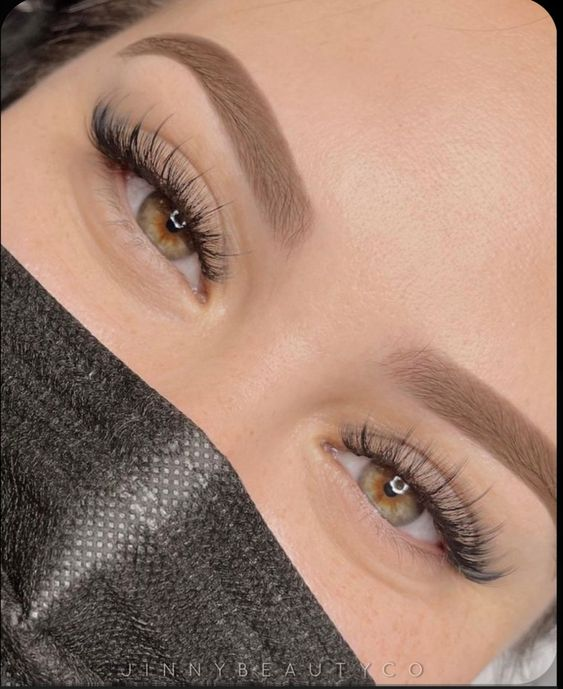

EXTENSIONES DE PESTAÑAS |
|||||||||||||||
| Las extensiones de pestañas representan la solución ideal para aquellas personas que anhelan lucir pestañas largas y estilizadas sin tener que recurrir a su alternativa postiza provisional o a las tradicionales máscaras de alargamiento. | |||||||||||||||
Volumen |
Naturales |
||||||||||||||
Se utiliza para conseguir una intensidad penetrante o un efecto total black. Aporta profundidad y definición a la mirada. Son las requeridas cuando se busca un aspecto más marcado o un espesor visible. |
 | Las pestañas postizas más naturales son aquellas que intercalan pelos de diferente longitud, ya que imitan la textura natural de las pestañas y hace que se integren perfectamente. No se verán “perfectas” ni simétricas, y eso hará que el resultado sea mucho más discreto. |
|||||||||||||